Recovery
Approved application · approved logoEvery image below is an actual canonical PNG. Open an image for its full resolution. These are authored design scenes, not current-app browser captures.
Reconnect before loading saved
conflict-offlineActions and implementation pointers
× · Open document · Keep both and load saved · Download full draft
apps/web/src/components/editor/save-status.tsxapps/web/src/components/editor/draft-recovery-actions.tsxapps/web/src/components/editor/document-draft.ts

SHA256 345d51d62a511973dd8fd394b9a24fc83300e733fa705ee0ee6d7dbe48551ccf

SHA256 11f5778753e6ba0100d184fdf94edf32d9e69f94358c00f8dbfebcbdb71b00d7

SHA256 61d2bfdc8a76496b5c10a351d9055636c06667231589e189b5287fd21da3f640

SHA256 b5d9b03129eb74f113c96579b0b077ebc78d4381fa2a7fbd06b8bdae240e33e1
Draft recovery · retrying
recovery-retryingActions and implementation pointers
× · Open document · Retry save · Download full draft
apps/web/src/components/editor/save-status.tsxapps/web/src/components/editor/draft-recovery-actions.tsxapps/web/src/components/editor/document-draft.ts
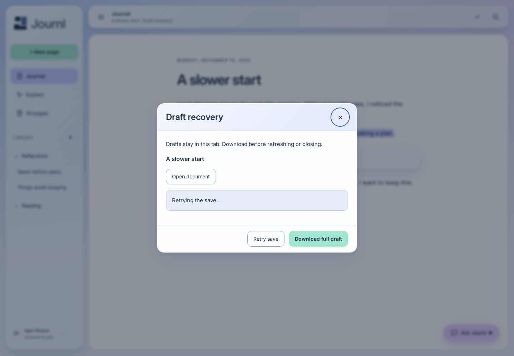
SHA256 f8209c218beeb08ab0d305fa8b716aa86c1eb5ff47f51ed737307d5d42eeef43
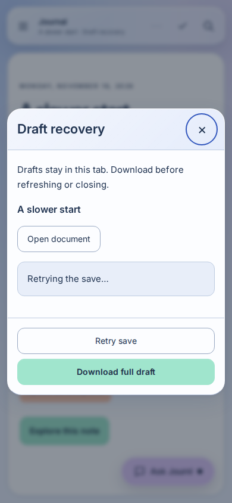
SHA256 8232cd561e7dd3d30166b4a6a96502b3e14ddb3aa8dbd8218792fb3ea6628e2b
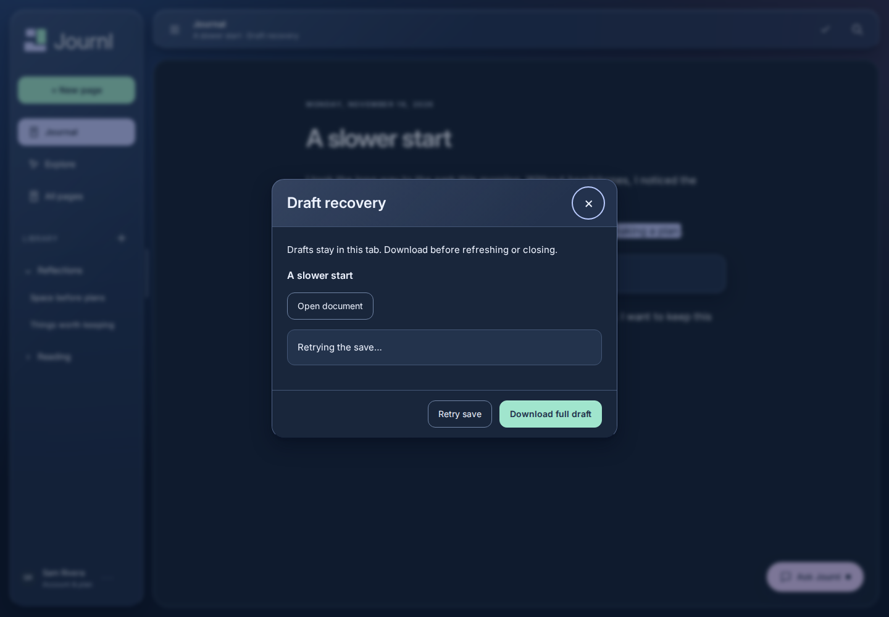
SHA256 cfceee523f3a063604ad246ef603eba99cc68290f186c110cfbdf547aaf437dc

SHA256 2ad0f634bf653cd0c2df5b458a8f5b03767d6553764277c79dc153cea832693c
Draft recovery · retry-error
recovery-retry-errorActions and implementation pointers
× · Open document · Retry save · Download full draft
apps/web/src/components/editor/save-status.tsxapps/web/src/components/editor/draft-recovery-actions.tsxapps/web/src/components/editor/document-draft.ts

SHA256 28747c1feb04db2b6f31818c69d541d09ec4ff5ecc313f0a4a1ed681331d20d7

SHA256 d0e045d758f49f8f26032b0bfd9528cd8782246095dc2b578c463dcdabf10006
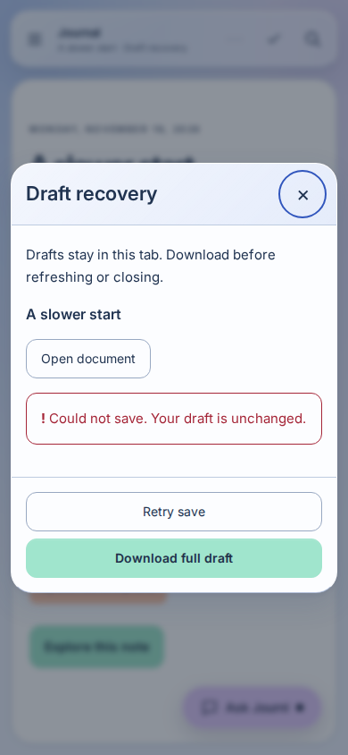
SHA256 24a02e436c63a90db3f5a3d9271c974e6d8a939a248735e3986b4f155e389d79
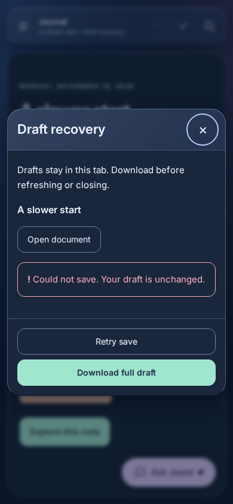
SHA256 5ef7f4e38b4d84e10b8261b1cc662dd941ac55f79f230e6c29e8e7066dd33d1f
Draft recovery · load-error
recovery-load-errorActions and implementation pointers
× · Open document · Retry save · Download full draft
apps/web/src/components/editor/save-status.tsxapps/web/src/components/editor/draft-recovery-actions.tsxapps/web/src/components/editor/document-draft.ts
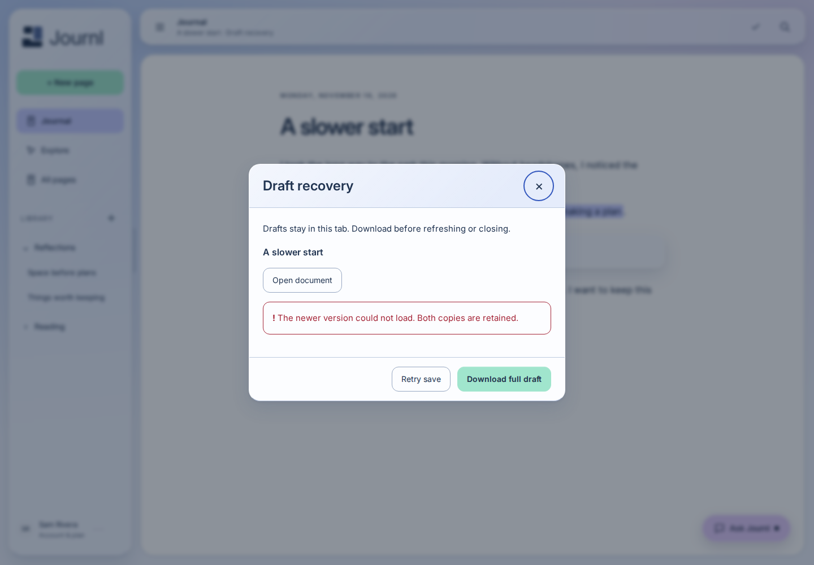
SHA256 b9e959880088ee1869a1d1916926fb26ad60a04be4357af90b6763ad5cddc420
SHA256 af9a55030942f7370e529fe5f876a5041fc45db43c297144df3e147df8f7ccdc
SHA256 04c53405e6802631f137b809e3aaa36e3bd908d85ee3f014f80975b5b2f58542

SHA256 cedadd0639617bcf57ce77e52d46139fa6906b08cf28557eb94bc1d4136d48a5
Draft recovery · changed
recovery-changedActions and implementation pointers
× · Open document · Retry save · Download full draft
apps/web/src/components/editor/save-status.tsxapps/web/src/components/editor/draft-recovery-actions.tsxapps/web/src/components/editor/document-draft.ts
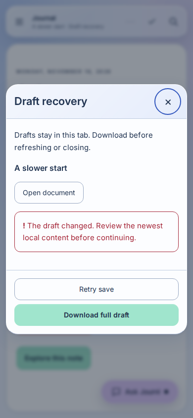
SHA256 cda5abde564f2e41bbfb2a3d056b30982647fa15254ea125e889d09fba04f685
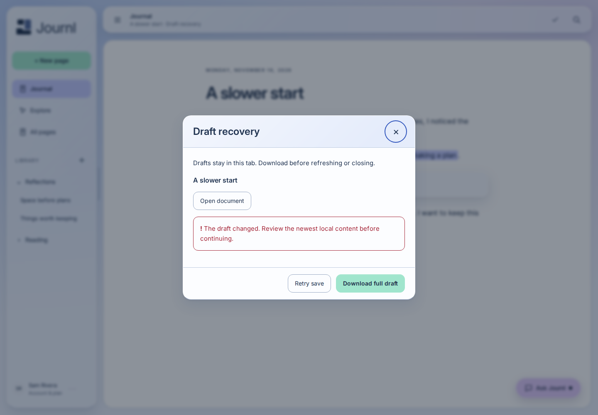
SHA256 5c254888d4b8dc4142c4bb5e4e9881a5534ae3cc201d249484ad5658fe09858e

SHA256 f1b1e074c45015522f507719ff731c3df5ed962ed6edf0d9fdc01ca66c7af72a
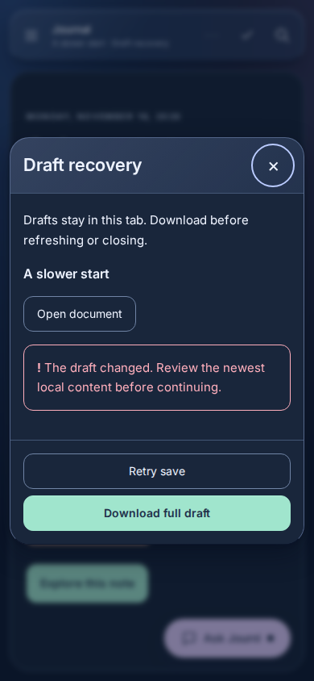
SHA256 548aff15b7d60e45cee59d8627dce39bd0b237773d6ab11ad76331aeb08ba43f
Draft recovery · deleted
recovery-deletedActions and implementation pointers
× · Open document · Retry save · Download full draft
apps/web/src/components/editor/save-status.tsxapps/web/src/components/editor/draft-recovery-actions.tsxapps/web/src/components/editor/document-draft.ts

SHA256 ed300f3962b19bf9a98d849a965f28d2982e0b0b55042c4739b551002a7fb46b
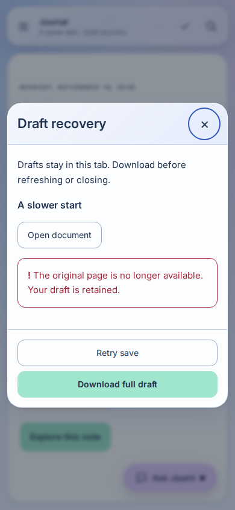
SHA256 0b8611a9eedfe7ea88a6a75b680cdebe1ecb70322660061610b6fe122c84f423

SHA256 563e5a575adf2d9b55a0a06fbaa0dc2dd729943a04a2d7f8a1bb75189c2894b5
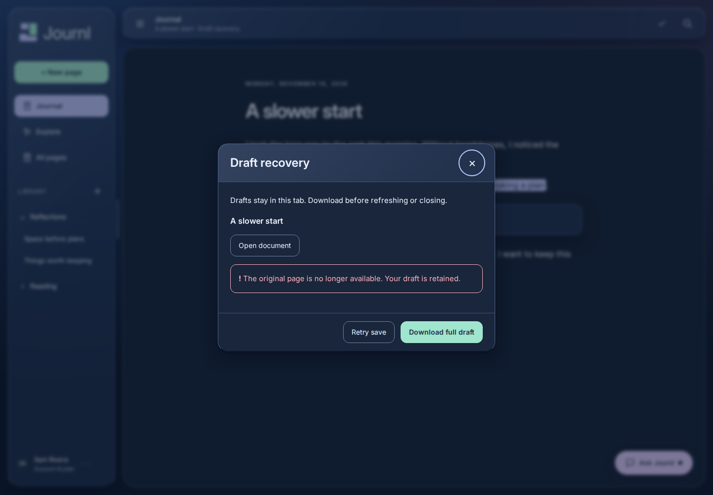
SHA256 c3360ce630d9137cc4f0d438f9ecdf773ac0a03a789f6e2796663f91cdc4293a
Draft recovery · download-error
recovery-download-errorActions and implementation pointers
× · Open document · Retry save · Download full draft
apps/web/src/components/editor/save-status.tsxapps/web/src/components/editor/draft-recovery-actions.tsxapps/web/src/components/editor/document-draft.ts

SHA256 b735a9aa88cff574e768343bc036efd3c9c0e5b937fc3235d38df8b8a1717963

SHA256 3fe38d6d7243aa182c9909240dc4c7c757aeeb80cb76fc93030bc98929cffdfa

SHA256 6543356c980c787d9c941d757ce7b8eb55c07df94b0d0414bdc56ad47dc91329

SHA256 9fbc55afa42d8a66a80aaaf2f25c4bd1f12cbde37dbbbce653de0b10f6de2522


Opening kept draft
kept-loadingActions and implementation pointers
×
apps/web/src/components/editor/save-status.tsxapps/web/src/components/editor/draft-recovery-actions.tsxapps/web/src/components/editor/document-draft.ts

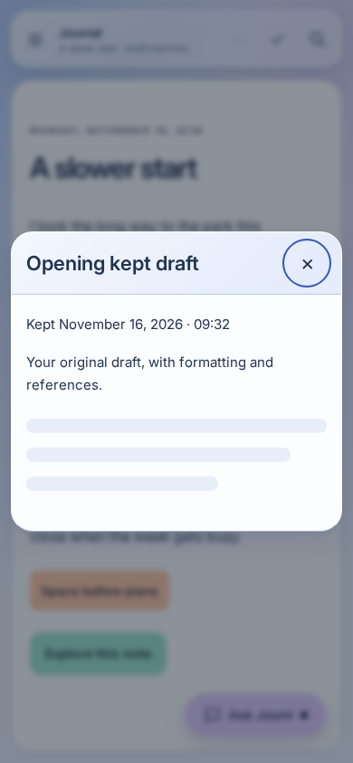
SHA256 dc8daf95fe500796fb58551d3ca84c16cd5277cfb65d7a8f4a0229edd907d78a

SHA256 77532af7e0b3562cac40893e04e06317117d51cdb12e2a3328e294794fda1c15

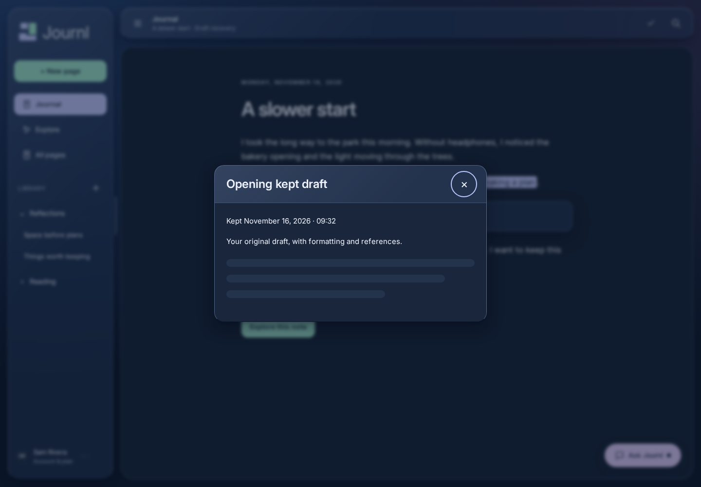
SHA256 bc99ca8c77642fdc9b536e5210c2b17f9d8ff5e9126a65664d7dc413d95559ef

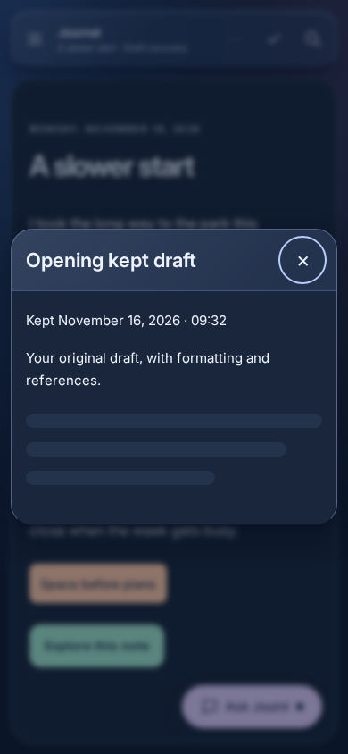
SHA256 792ae81d4ec82f592d1cb3b598b1800f009e318164012dba1ab6eac032517ab6
Kept draft download
kept-download-errorActions and implementation pointers
× · Download kept draft
apps/web/src/components/editor/save-status.tsxapps/web/src/components/editor/draft-recovery-actions.tsxapps/web/src/components/editor/document-draft.ts

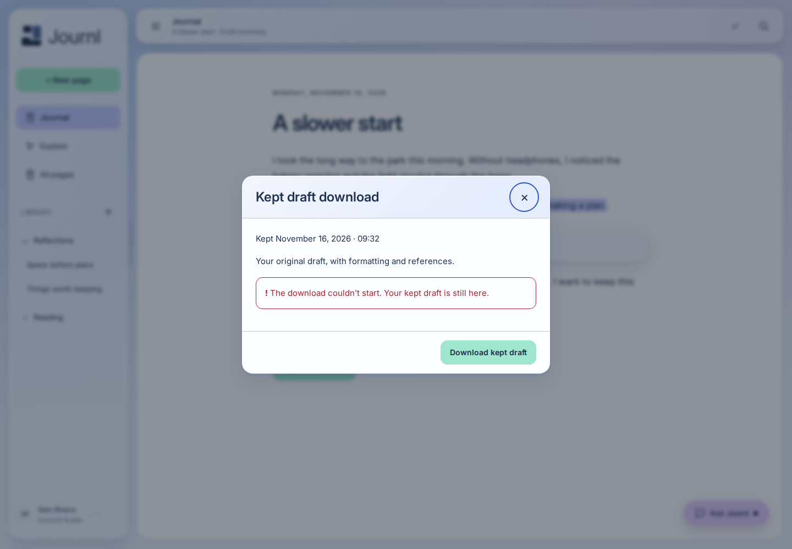
SHA256 e1bf8a2aa151aefec6d80756fa21e22aaf5647da19b64c22855dd3f67aa2d37c

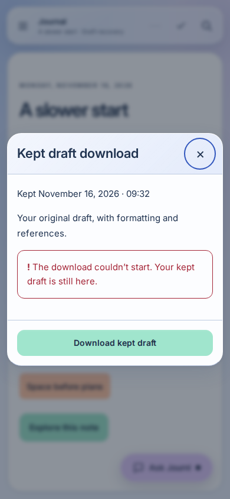
SHA256 7a2ac5093ea3d54a46cc4699e581366e14a094698c7846d60ac05955f77ea02f

SHA256 79bf012e40484a0351005dd661f4b9265d641860279a056f789b83cd1b5beeb6

SHA256 dce9a63b285aa24baa37a412fc8d562903401b6f6a93bff90fb96b88675a2cd1